Capturas reais do Godot 4.6.3. Diário, acompanhamento, níveis regionais e demônios de elite. 31 testes Cartoon locais passaram. Arte MODELED_PENDING_GATE; balanceamento PROPOSED. Sem APK nesta atualização.
Cenas congeladas para inspeção; posições naturais dos demônios. O nível 1 em regiões avançadas demonstra o aviso vermelho de perigo.
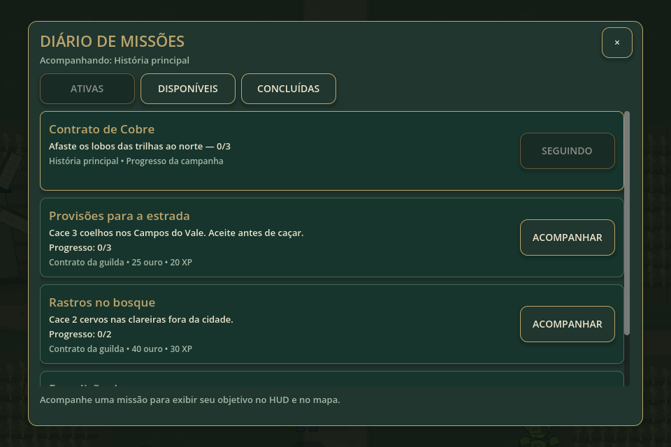
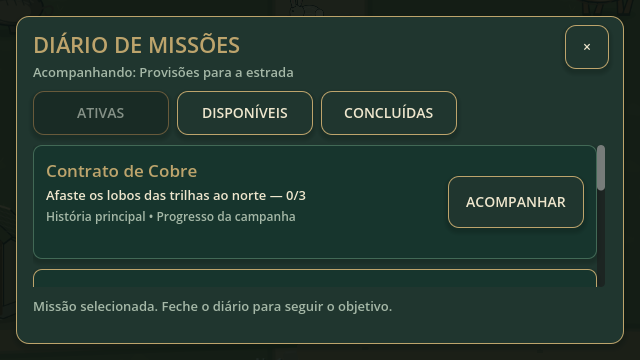
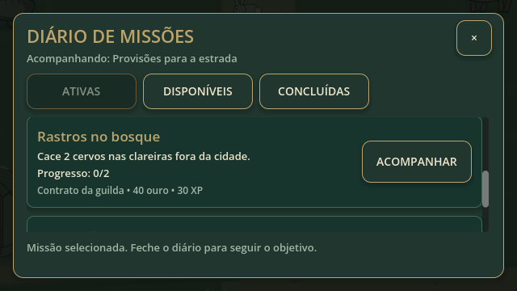
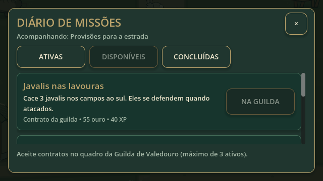
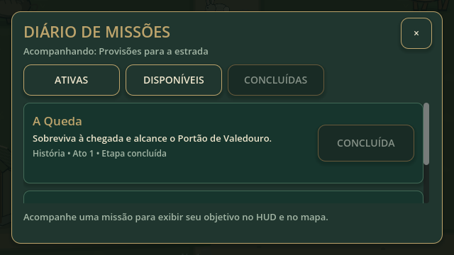
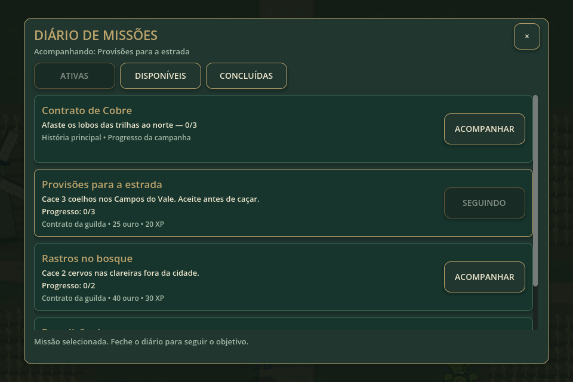
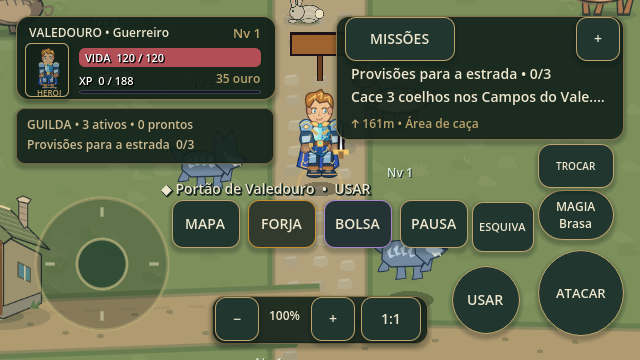
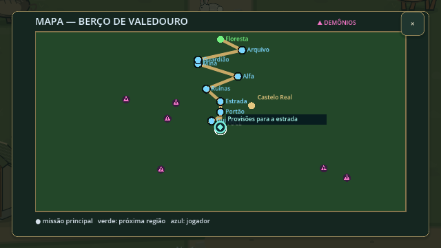
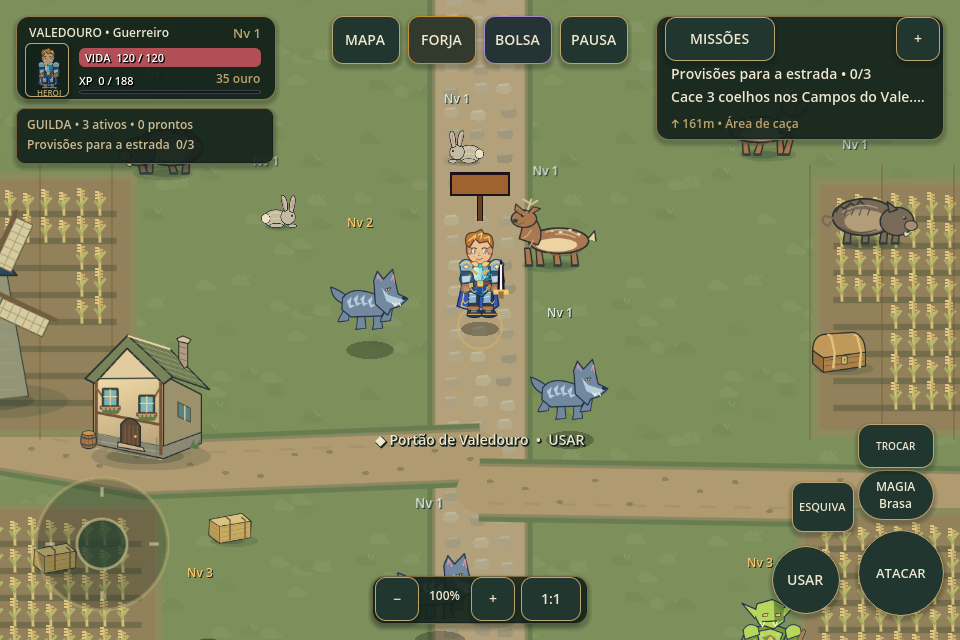
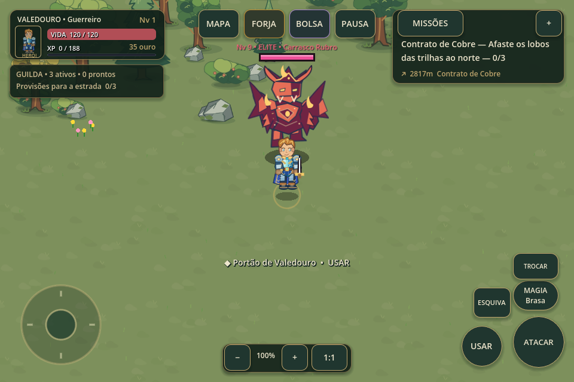
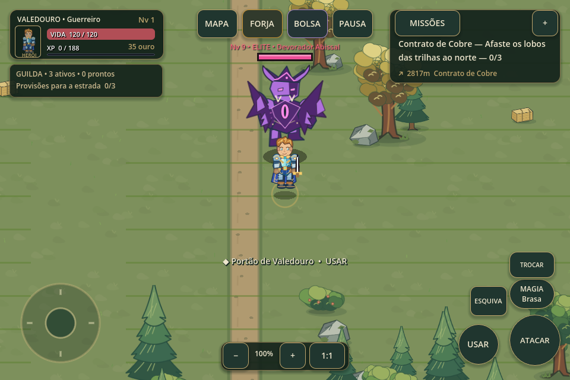
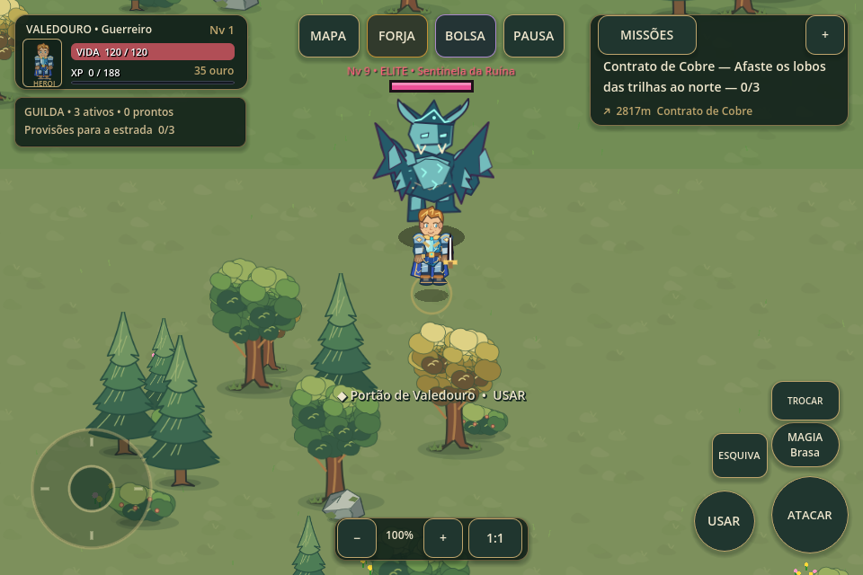
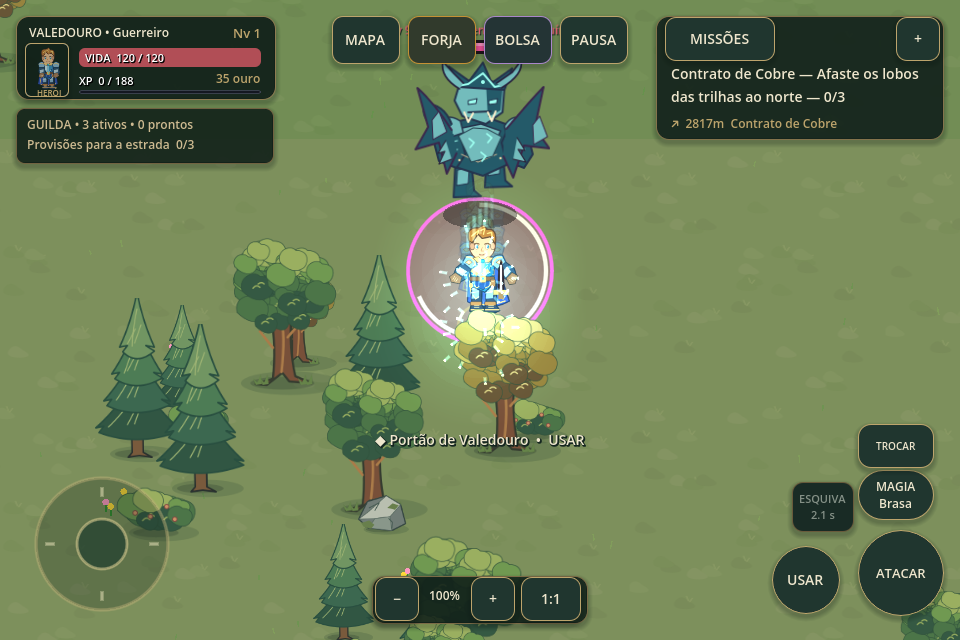
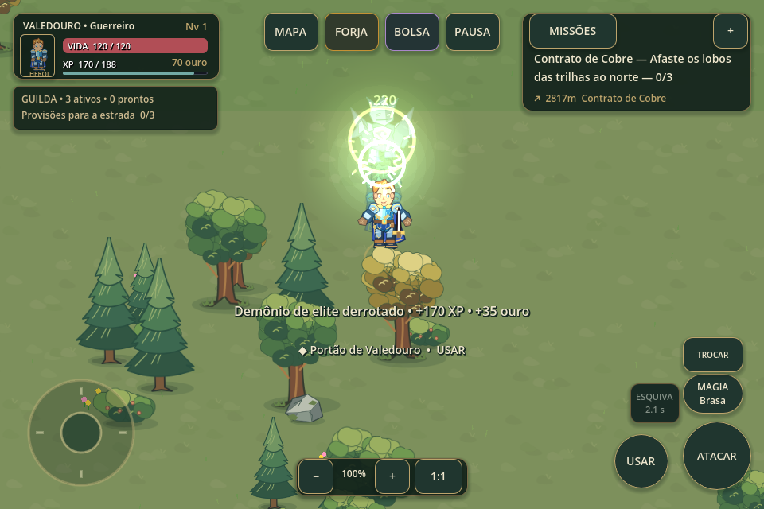
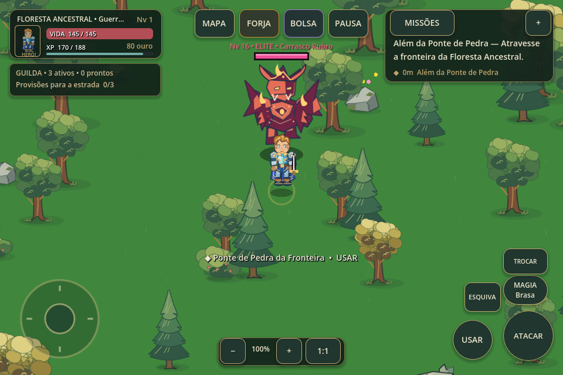
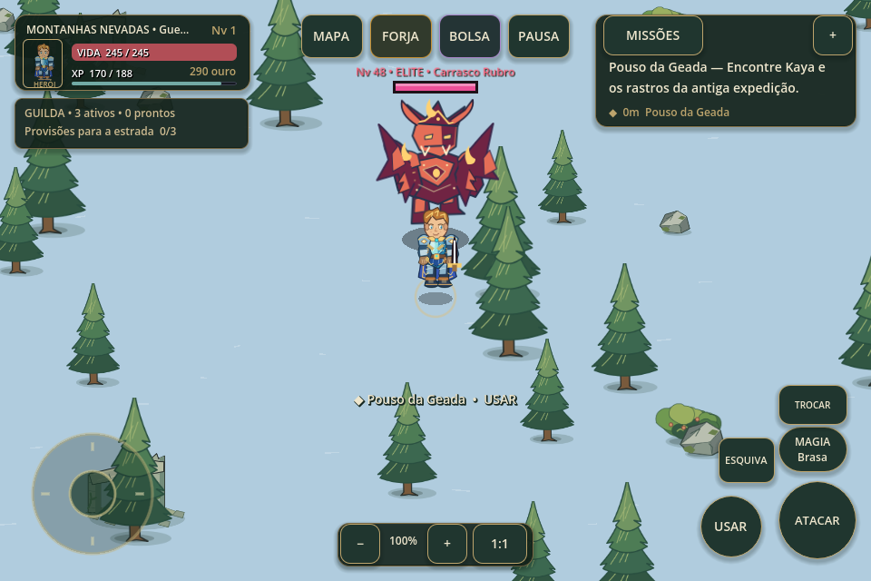
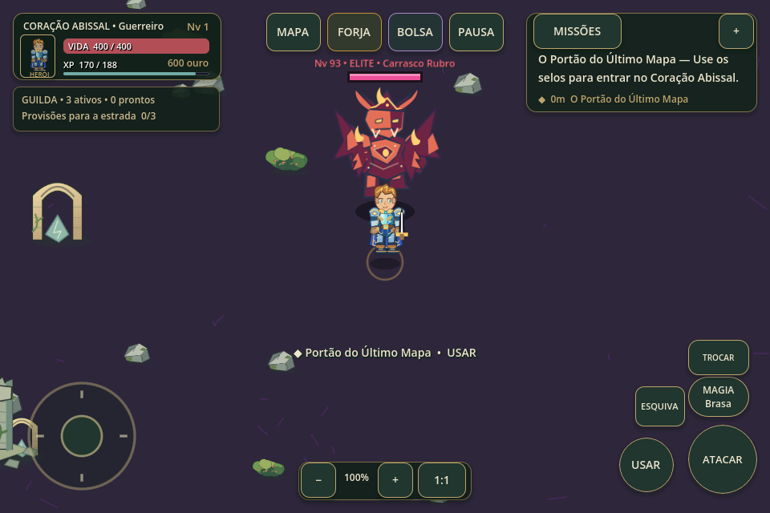
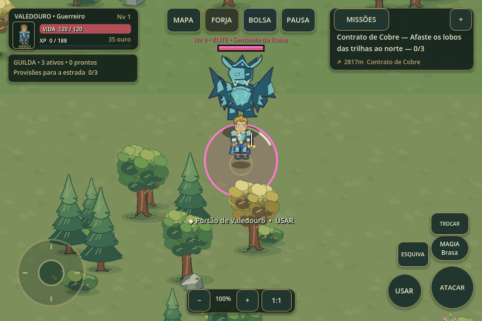